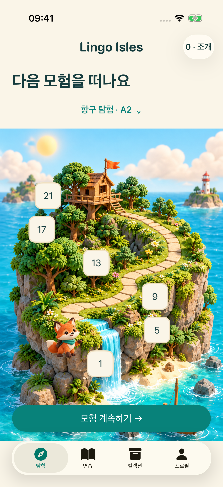
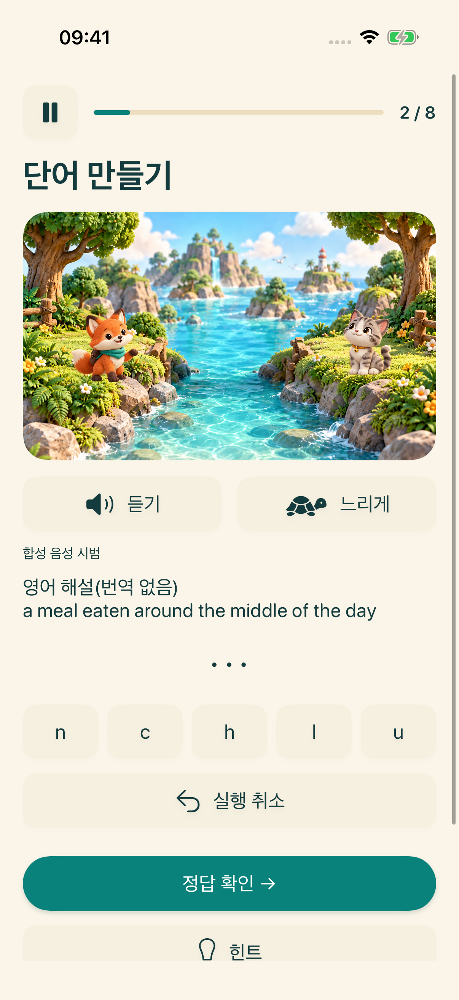
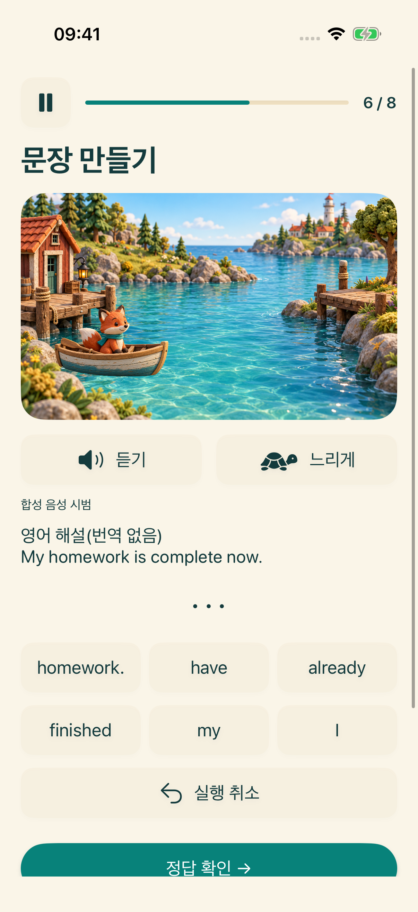
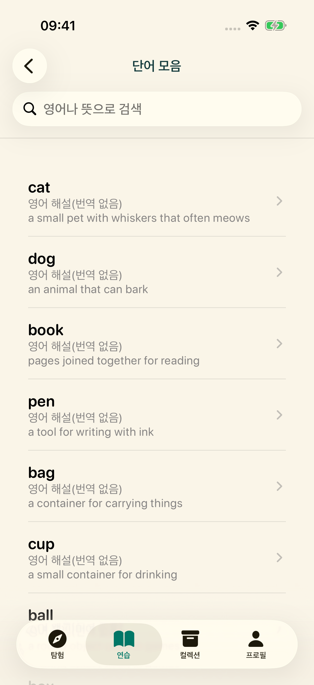

다음 섬이 기다려요
학습 단계를 고르고 짧은 영어 연습을 따라 모험을 이어 가세요.
4개의 학습 섬을 탐험하세요. 듣고, 단어를 만들고, 문장을 조합하고, 내 목소리로도 도전해 보세요. 작은 발견을 하나씩 쌓아 가세요.
모험 둘러보기iPhone과 iPad 출시 준비 중


학습 단계를 고르고 짧은 영어 연습을 따라 모험을 이어 가세요.

시스템 음성을 듣고 글자를 배열하며 영어 철자를 연습하세요.

단어를 순서대로 놓으며 영어 문장이 만들어지는 방식을 알아보세요.

단어 라이브러리를 둘러보고, 즐겨찾기에 저장하고, 배운 내용을 다시 살펴보세요.

녹음하고, 다시 듣고, 한 번 더 도전하세요. 지원 기기에서는 기기 내 음성 텍스트 변환 기능도 선택해 사용할 수 있어요. 발음 점수를 매기는 기능이 아닌 말하기 연습입니다.
화면은 16개 언어를 지원합니다. 학습 설명은 영어와 중국어 간체로 제공하며, 다른 언어의 번역이 없으면 영어 설명임을 명확히 표시합니다.
학습 콘텐츠와 진도는 기기에 저장됩니다. 계정이나 개발자가 운영하는 클라우드 동기화가 필요하지 않습니다. 음성 리소스는 기기에 따라 달라지며, 광고와 개인정보 관련 서비스에는 네트워크 연결이 필요합니다.
18세 미만이거나 연령대를 설정하지 않은 프로필에서는 광고 절차를 시작하지 않습니다. 성인에게 표시되는 광고는 개인정보 선택 사항과 광고 제공 여부에 따라 달라집니다. 보상형 광고 시청은 선택 사항입니다.